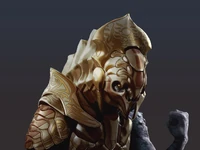

"Me dejaron escoger. ¿Te lo conté alguna vez? Escogí el Spartan que quise. Ya me conoces, investigué, observé mientras te convertías en el soldado que necesitábamos que fueras. Al igual que los demás; eras fuerte, rápido y valiente. Un Líder Nato. Pero tú tenías algo que los demás no tenían, algo, que sólo vi yo. ¿Lo adivinas?... ¡Suerte!... ¿Estaba equivocada?". ~Cortana a John-117 El Suboficial Jefe Maestro John-117, [1] conocido como Jefe Maestro (Master Chief en inglés), es un SPARTAN-II de la Armada del UNSC y el principal protagonista en el Universo de Halo. Ha servido como uno de los personajes más importantes en la Guerra Covenant y tiene cerca de 30 años de servicio activo militar, además de poseer todas las condecoraciones que el UNSC ofrece, excepto la de "Prisionero de Guerra". En 2553, John fue declarado MIA (Missing in Action, o Desaparecido en acción) después de la Batalla de la Instalación 00, cuando él y el actual Inquisidor, Thel 'Vadam, dispararon la Instalación 08. En 2557, John vuelve a la acción después de 4 años estando en sueño criogénico, enfrentándose al Remanente Covenant y a los Forerunner.
El Teniente SPARTAN-B312 [4] fue un SPARTAN-III adjunto al Grupo Tres del Comando Especial de Guerra del Ejército del UNSC. [1] Durante la Caída de Reach en el verano de 2552, se desempeñó como miembro del Equipo Noble bajo el distintivo de "Noble Seis". [5] Debido a la naturaleza clasificada de sus operaciones, B312 es desconocido para la mayoría de los militares del UNSC y la humanidad. Sin embargo, la Dra. Catherine Halsey declaró que B312 compartía la calificación de "hiper-letal" con sólo otro Spartan [3] y que cumplió un papel esencial para asegurar la victoria de la humanidad en la Guerra Covenant. Debido a que su archivo fue fuertemente redactado por la Oficina de Inteligencia Naval, gran parte de la vida temprana del SPARTAN-B312 es desconocida. El Spartan era originalmente un candidato de la Compañía Beta cuyo desempeño impresionó tanto a sus superiores que él (junto con un pequeño número de sus compañeros, designados "cat 2") fue reasignado inmediatamente después del entrenamiento, antes del inevitable baño de sangre de la Operación: TORPEDO. Como uno de los pocos SPARTAN-III contemporáneos restantes, B312 fue reutilizado como un activo antiterrorista. Después de varios años de estar luchando contra los Insurreccionistas, B312 fue transferido al Equipo NOBLE, donde tomó el lugar del difunto Thom-A293 como "Noble Seis". La transferencia de B312 a NOBLE se produjo inmediatamente al comienzo de la Caída de Reach, colocando al Spartan en un nuevo ambiente de trabajo en equipo contra el Covenant.
Thel 'Vadam [1] (anteriormente Thel 'Vadamee) es un Sangheili Kaidon de la Casa de Vadam. Fue el último Inquisidor que tuvo el Covenant y continuó siendo ampliamente conocido por su título en los últimos meses de la Guerra Humano-Covenant y en el período de la Post-Guerra. En el presente, es el líder de las Espadas de Sanghelios y es considerado por muchos como el líder formal de los Sangheili en general. Thel es el antagonista indirecto de Halo: Combat Evolved, antagonista y aliado en Halo 2 y compañero de John-117 durante los sucesos de Halo 3. En su prominente carrera militar en el Covenant llegó a servir como un destacado Comandante Supremo de la Flota de Justicia Particular en la Guerra Humano-Covenant, ganando fama y méritos por sus brillantes tácticas militares y victorias avasallantes contra los humanos, siendo su mayor logro la Caída de Reach. 'Vadam fue responsable de la pérdida de más de mil millones de vidas humanas durante la guerra, y la cristalización de al menos siete colonias.

Cortana fue una IA que forma una parte fundamental en la franquicia de los videojuegos del Universo de Halo y es la principal antagonista en la Saga del Reclamador. Cortana posee una personalidad inteligente y vivaz, además de un buen sentido del humor. Su lealtad hacia los humanos está programada, pero ella dice que su lealtad es genuina, tal vez por el hecho de tratarse de un clon de un cerebro verdaderamente humano.

El Spartan Jameson Locke (Número de Servicio: 73808-3153-JL) es un SPARTAN-IV y antiguo agente de la Oficina de Inteligencia Naval. Antes de ser un Spartan, Locke sirvió como especialista en adquisiciones, inteligencia, recuperación importante de objetos de las manos enemigas así como seguimiento y asesinato de objetivos de alto valor. James Locke es ágil para resolver un rango de complicadas situaciones tanto con su cerebro como con sus habilidades de combate.

El Comandante Jerome-092, nacido como Jerome Cable, es un SPARTAN-II del UNSC. En 2531, sirvió como líder del Equipo Rojo y luchó junto con la tripulación de la UNSC Spirit of Fire.
"Así se disipan los frutos de mi traición. Incluso estas bestias reconocieron aquello a lo que tú eras ajeno, humano, tu nobleza te ha cegado... como siempre. ¿La Bibliotecaria dejó poco al azar, no?, poner a mis propios guardianes, a mi propio mundo en mi contra. Pero que absurdo creer que podía proteger a sus mascotas eternamente. Si no han dominado a estos primitivos, es que el Hombre no ha alcanzado el Manto, su ascenso aún puede evitarse. El tiempo era tu aliado... humano, pero te abandonó. Los Forerunner regresaron, esta tumba ahora es tuya". ~Didacta a John-117 después de ser despertado El Ur-Didacta, nacido con el nombre de Shadow-of-Sundered-Star, es un Prometeo Forerunner que estaba a cargo de todo el ejército Forerunner. Su fiel creencia en el Manto lo llevó a oponerse a la construcción de los Halos. Era el esposo de La Bibliotecaria. Aunque se creía originalmente que fue asesinado por el Constructor Maestro Faber, el Didacta existió como dos entidades al final de la Guerra Forerunner-Flood; su yo original, al igual que su conciencia implantada en un joven Forerunner conocido como Nacido de las Estrellas de Duración Eterna. Para diferenciar a ambas entidades, el Didacta original fue referido como el Ur-Didacta, mientras que su otra encarnación era conocido como el IsoDidacta. Finalmente el Ur-Didacta fue exiliado a Requiem, no siendo despertado hasta 2557, mientras que el IsoDidacta sirvió hasta el fin del conflicto con los Flood y fue el responsable de activar la Matriz de Halo.
El Primordial, también conocido como El Prisionero de Charum Hakkor (por los humanos), El Eterno (por los Forerunner) o La Bestia (por los Tudejsa), fue un individuo de gran edad y poder, alguna vez mantenido prisionero en la capital humana de Charum Hakkor, sirviendo como una especie de Oráculo para los humanos. El mismo se denominaba el último Precursor vivo de la galaxia, y fungió como un Gravemind (una de las consciencias Flood) durante la Guerra Flood.